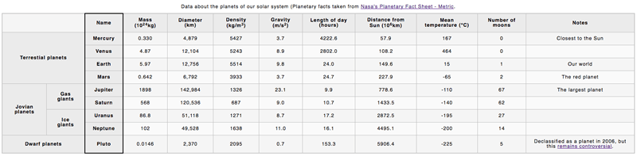

In our table assessment, we provide you with some data on the planets in our solar system, and get you to structure it into an HTML table.
| Prerequisites: | Before attempting this assessment you should have already worked through all the articles in this module. |
|---|---|
| Objective: | To test comprehension of HTML tables and associated features. |
To start the assessment, make local copies of blank-template.html, minimal-table.css, and planets-data.txt in a new directory in your local computer.
If you get stuck, then ask us for help — see the {{anch("Assessment or further help")}} section at the bottom of this page.
Note: Alternatively, you could use a site like JSBin or Glitch to do your assessment. You could paste the HTML, CSS and JavaScript into one of these online editors. If the online editor you are using doesn't have separate JavaScript/CSS panels, feel free to put them inline <script>/<style> elements inside the HTML page.
You are working at a school; currently your students are studying the planets of our solar system, and you want to provide them with an easy-to-follow set of data to look up facts and figures about the planets. An HTML data table would be ideal — you need to take the raw data you have available and turn it into a table, following the steps below.
The finished table should look like this:

You can also see the example live here (no looking at the source code — don't cheat!)
The following steps describe what you need to do to complete the table example. All the data you'll need is contained in the planets-data.txt file. If you have trouble visualising the data, look at the live example above, or try drawing a diagram.
blank-template.html, and start the table off by giving it an outer container, a table header, and a table body. You don't need a table footer for this example.If you would like your work assessed, or are stuck and want to ask for help:
{{PreviousMenu("Learn/HTML/Tables/Advanced", "Learn/HTML/Tables")}}